東京大学 2007年 理科 第3問
問題
座標平面上の2点P,Qが、曲線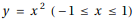上を自由に動くとき、線分PQを1:2に内分する点Rが動く範囲をDとする。ただし、P=QのときはR=Pとする。
(1) aを-1≤a≤1をみたす実数とするとき、点(a,b)がDに属するためのbの条件をaを用いて表せ。
(2) Dを図示せよ。
解答
(1)
点Pの座標を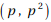、点Qの座標を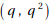として、点(a,b)が領域Dに入る条件を求める。
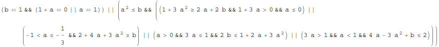
これをbについて整理して
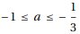のとき 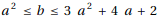
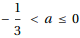のとき 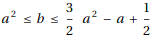
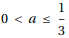のとき 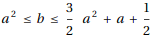
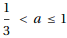のとき 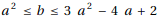
(2)
RegionPlotで領域Dを図示する。(塗りつぶし部分、境界線をすべて含む)
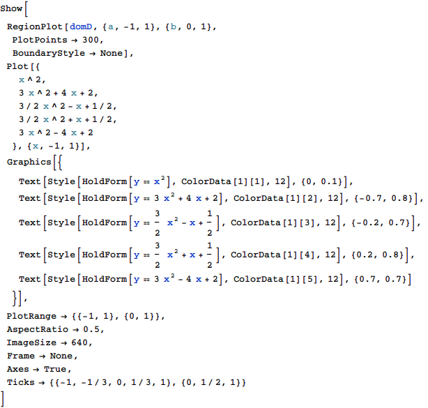
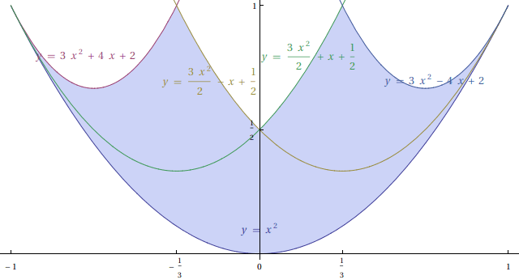
補足・感想
軌跡や領域の問題は述語論理式で記述できるとあとはMathematicaが解いてくれる。
(2)でわかりやすい図を作るほうが大変だった。